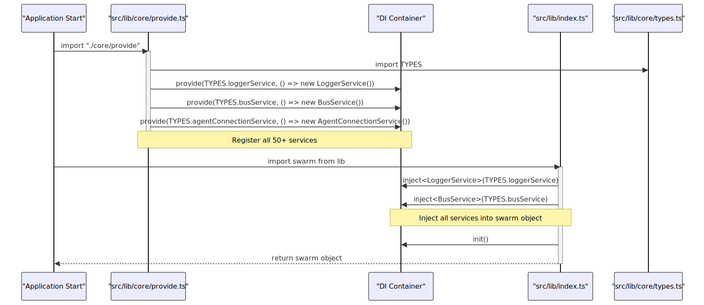
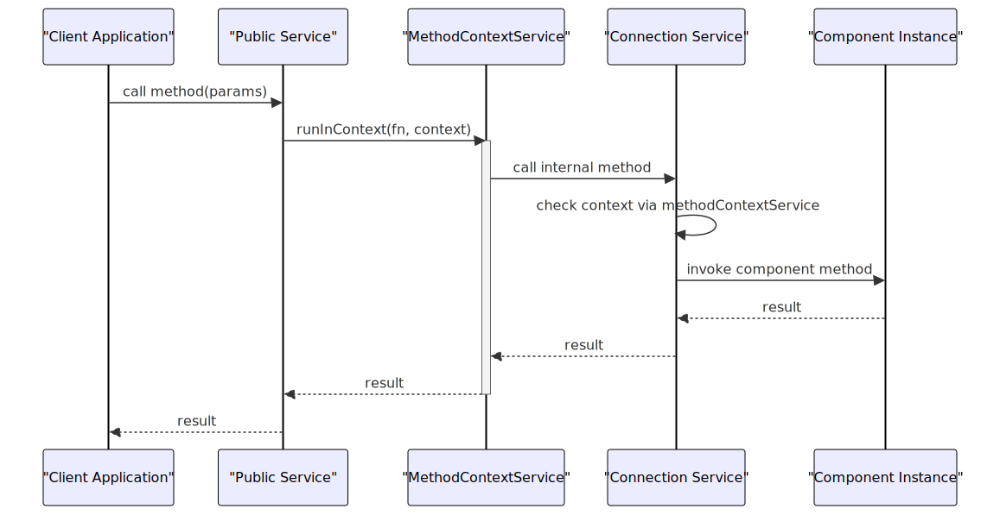

This document explains the dependency injection (DI) system used in agent-swarm-kit, which forms the architectural backbone of the entire framework. The DI system provides service management, component lifecycle handling, and a clean separation of concerns that enables the multi-agent architecture to function effectively.
The core of the system is the swarm object exported from the main library, which provides access to all registered services through a single interface.
For information about specific services and their implementations, see Core Components.
Agent-swarm-kit uses dependency injection to:
ISwarmDI interfaceThe framework uses a custom DI implementation built around the inject, provide, and init functions from the core DI module. All services are registered at startup and accessed through the central swarm object.


The DI container in agent-swarm-kit organizes services into seven distinct categories, with each service accessible through the swarm object:
Core utilities that provide fundamental capabilities:
swarm.docService: Documentation generation and retrievalswarm.busService: Event-driven communication across componentsswarm.perfService: Performance monitoring and metrics trackingswarm.aliveService: System health and liveness monitoringswarm.loggerService: Centralized logging with debug capabilitiesServices that manage execution context and scoped data:
swarm.methodContextService: Method-level execution context trackingswarm.payloadContextService: Payload data encapsulation and accessswarm.executionContextService: Execution flow context with clientId, executionId, processIdswarm.schemaContextService: Schema overrides for pipeline executionDefine configurations and metadata for system components:
swarm.agentSchemaService: Agent definitions and configurationsswarm.swarmSchemaService: Swarm orchestration definitionsswarm.toolSchemaService: Tool function definitionsswarm.completionSchemaService: AI model completion configurationsswarm.embeddingSchemaService: Text embedding configurationsswarm.storageSchemaService: Storage system configurationsswarm.stateSchemaService: State management configurationsswarm.memorySchemaService: Session memory structuresswarm.policySchemaService: Policy and rule definitionsswarm.mcpSchemaService: Model Context Protocol configurationsswarm.computeSchemaService: Compute resource definitionsswarm.pipelineSchemaService: Pipeline workflow definitionsswarm.navigationSchemaService: Agent navigation configurationsswarm.wikiSchemaService: Agent documentation structuresHandle direct operations and lifecycle management:
swarm.agentConnectionService: Agent instance management and executionswarm.sessionConnectionService: Client session lifecycle managementswarm.swarmConnectionService: Swarm orchestration and navigationswarm.storageConnectionService: Client-specific storage operationsswarm.stateConnectionService: Client-specific state managementswarm.mcpConnectionService: MCP tool and resource managementswarm.computeConnectionService: Compute resource lifecycleswarm.sharedStorageConnectionService, swarm.sharedStateConnectionService, swarm.sharedComputeConnectionService: Shared resource variantsProvide the public API layer with context management and validation:
swarm.agentPublicService: Agent execution and management APIswarm.sessionPublicService: Session management and communication APIswarm.swarmPublicService: Swarm orchestration and navigation APIswarm.storagePublicService: Storage operations APIswarm.statePublicService: State management APIswarm.mcpPublicService: MCP operations APIswarm.computePublicService: Compute operations APIswarm.policyPublicService: Policy enforcement APIswarm.historyPublicService: Message history management APIswarm.sharedStoragePublicService, swarm.sharedStatePublicService, swarm.sharedComputePublicServiceManage metadata and introspection:
swarm.agentMetaService: Agent metadata trackingswarm.swarmMetaService: Swarm metadata trackingEnforce rules, constraints, and system integrity:
swarm.agentValidationService: Agent operation validationswarm.sessionValidationService: Session lifecycle validationswarm.swarmValidationService: Swarm configuration validationswarm.toolValidationService: Tool parameter validationswarm.storageValidationService: Storage operation validationswarm.stateValidationService: State management validationswarm.mcpValidationService: MCP operation validationswarm.computeValidationService: Compute resource validationswarm.policyValidationService: Policy enforcement validationswarm.completionValidationService: AI completion validationswarm.embeddingValidationService: Embedding operation validationswarm.navigationValidationService: Agent navigation validationswarm.wikiValidationService: Documentation validationswarm.pipelineValidationService: Pipeline execution validationswarm.executionValidationService: Execution context validationServices are identified by unique symbols defined in TYPES and registered with the DI container through the provide function:

The TYPES object contains symbols for all service categories:
// Base services symbols
const baseServices = {
busService: Symbol('busService'),
docService: Symbol('docService'),
perfService: Symbol('perfService'),
aliveService: Symbol('aliveService'),
loggerService: Symbol('loggerService'),
};
// Registration in provide.ts
{
provide(TYPES.docService, () => new DocService());
provide(TYPES.busService, () => new BusService());
provide(TYPES.perfService, () => new PerfService());
provide(TYPES.aliveService, () => new AliveService());
provide(TYPES.loggerService, () => new LoggerService());
}
The registration process uses factory functions to create service instances, ensuring proper initialization and lifecycle management.
Agent-swarm-kit uses a two-layer service pattern:
This separation allows internal services to focus on implementation details while public services handle cross-cutting concerns.
export class AgentConnectionService implements IAgent {
private readonly loggerService = inject<LoggerService>(TYPES.loggerService);
private readonly busService = inject<BusService>(TYPES.busService);
private readonly methodContextService = inject<TMethodContextService>(
TYPES.methodContextService
);
// Other injected dependencies...
public getAgent = memoize(
([clientId, agentName]) => `${clientId}-${agentName}`,
(clientId: string, agentName: string) => {
// Agent creation logic
}
);
public execute = async (input: string, mode: ExecutionMode) => {
// Direct execution logic
};
}
export class AgentPublicService implements TAgentConnectionService {
private readonly loggerService = inject<LoggerService>(TYPES.loggerService);
private readonly agentConnectionService = inject<AgentConnectionService>(
TYPES.agentConnectionService
);
public execute = async (
methodName: string,
clientId: string,
agentName: AgentName,
input: string,
mode: ExecutionMode
) => {
// Logging and validation
return await MethodContextService.runInContext(
async () => {
// Call the underlying connection service
return await this.agentConnectionService.execute(input, mode);
},
{
methodName,
clientId,
agentName,
// Other context properties
}
);
};
}

Services inject their dependencies using the inject function with symbols from TYPES. This creates a clear dependency graph and enables service mocking for testing.
Services typically follow these patterns:
Agent-swarm-kit uses three context services to manage the execution environment:
Tracks information about the current method execution, including:
methodName: Current method being executedclientId: Current client IDagentName: Current agent nameswarmName: Current swarm namePublic services wrap each method call with MethodContextService.runInContext() to ensure proper context is maintained.
Manages a global execution context for tracking operations across the system, particularly for performance monitoring and event tracking.
Stores additional data that needs to be accessed across method boundaries, enabling data sharing without explicit parameter passing.

The DI system is accessed through several main entry points:
export const makeConnection = beginContext(
async (connector: ReceiveMessageFn, clientId = randomString(), swarmName: SwarmName) => {
// Use services from the DI container via 'swarm'
swarm.swarmValidationService.validate(swarmName, METHOD_NAME);
// Call methods on public services
const send = swarm.sessionPublicService.connect(
connector, METHOD_NAME, clientId, swarmName
);
// Return function that uses services internally
return async (outgoing) => {
// ...additional service usage
};
}
);
export const session = beginContext(
async (clientId = randomString(), swarmName: SwarmName, config = {}) => {
// Use services from the DI container
swarm.swarmValidationService.validate(swarmName, METHOD_NAME);
// Return object with methods that use services
return {
complete: queued(async (content) => {
return await swarm.sessionPublicService.execute(
content, "user", METHOD_NAME, clientId, swarmName
);
}),
dispose: async () => {
await disposeConnection(clientId, swarmName, METHOD_NAME);
}
};
}
);
export const disposeConnection = beginContext(
async (clientId: string, swarmName: SwarmName, methodName = METHOD_NAME) => {
// Dispose resources using public services
await swarm.sessionPublicService.dispose(methodName, clientId, swarmName);
await swarm.swarmPublicService.dispose(methodName, clientId, swarmName);
// Clean up other resources
// ...
}
);
These entry points provide a client-friendly API that internally leverages the DI system for service access and lifecycle management.
| Category | Count | Purpose | Key Services | Access Pattern |
|---|---|---|---|---|
| Base Services | 5 | Core utilities and infrastructure | swarm.loggerService, swarm.busService, swarm.perfService |
Used by all other services |
| Context Services | 4 | Execution context and scoping | swarm.methodContextService, swarm.executionContextService |
Used by public services for context management |
| Schema Services | 12 | Component configuration and metadata | swarm.agentSchemaService, swarm.swarmSchemaService |
Used by connection services for configuration |
| Connection Services | 8 | Direct component operations | swarm.agentConnectionService, swarm.sessionConnectionService |
Used by public services for implementation |
| Public Services | 10 | External API with validation | swarm.agentPublicService, swarm.sessionPublicService |
Used by entry point functions |
| Meta Services | 2 | Metadata and introspection | swarm.agentMetaService, swarm.swarmMetaService |
Used for system introspection |
| Validation Services | 15 | Rule enforcement and integrity | swarm.agentValidationService, swarm.sessionValidationService |
Used by public services and entry points |
All services are accessed through the swarm object, which implements the ISwarmDI interface:
// Direct service access
swarm.loggerService.log(METHOD_NAME, data);
swarm.sessionValidationService.validate(clientId, methodName);
// Service injection within other services
const loggerService = inject<LoggerService>(TYPES.loggerService);
const busService = inject<BusService>(TYPES.busService);
The dependency injection system in agent-swarm-kit provides a solid foundation for building complex multi-agent systems. By organizing services into distinct categories with clear responsibilities and dependencies, the framework achieves a high degree of modularity, testability, and maintainability. The two-layer service pattern (connection and public services) ensures proper separation of concerns, while context management enables safe concurrent execution.
This architecture allows developer-friendly entry points like makeConnection, session, and complete to provide a simple API while leveraging the full power of the underlying service infrastructure.